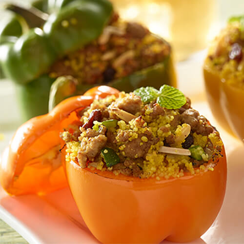

Moroccan Stuffed Bell Peppers

This easy and slow boiled recipe will be sure to delight guests with
its unique and tasty spice and preparation method. Beyond meat for increased
flavor and minimal fat relative to other ground beefs.
Ingredients
- Bell Peppers: 4 whole
- Ground Beyond Beef: 1 Pound
- Tomato Sauce: 1 15oz can
- White rice: 1 cup uncooked
- Salt: 1 teaspoon
- Pepper: 1 teaspoon
- Cinammon: 0.5 teaspoons
Instructions
- In a large bowl, mix the Beyond Beef, rice, and spices
- Cut a hole in the tops of each pepper and ensure they
are hollowed out and seeds removed.
- Stuff peppers with the meat mixture, not too tight
or full to avoid overflow.
- Place peppers in a dutch oven and fill dutch oven with
water, until it is 80% up to the top of the peppers.
- Cover and bring to a boil, and then reduce to simmer for
40 minutes. Then remove from heat and serve peppers!